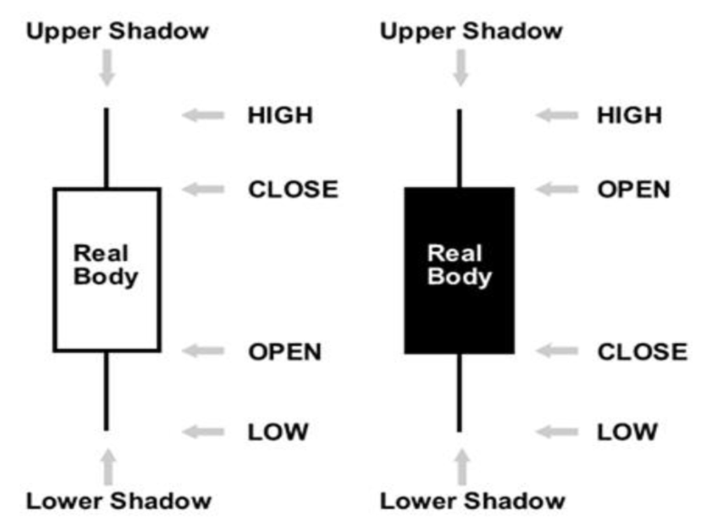

HISTORY OF CANDLE STICK
Candlesticks have been around a lot longer than anything similar in the Western world.
The Japanese were looking at charts as far back as the 17th century, whereas the earliest known charts in the US appeared in the late 19th century.
Rice trading had been established in Japan in 1654, with gold, silver and rape seed oil following soon after.
Rice markets dominated Japan at this time and the commodity became, it seems, more important than hard currency.
Munehisa Homma (aka Sokyu Honma), a Japanese rice trader born in the early 1700s, is widely credited as being one of the early exponents of tracking price action.
He understood basic supply and demand dynamics, but also identified the fact that emotion played a part in the setting of price.
He wanted to track the emotion of the market players, and this work became the basis of candlestick analysis.
He was extremely well respected, to the point of being promoted to Samurai status.
The Japanese did an extremely good job of keeping candlesticks quiet from the Western world, right up until the 1980s, when suddenly there was a large cross-pollination of banks and financial institutions around the world.
This is when Westerners suddenly got wind of these mystical charts. Obviously, this was also about the time that charting in general suddenly became a lot easier, due to the widespread use of the PC.
In the late 1980s several Western analysts became interested in candlesticks. In the UK Michael Feeny, who was then head of TA in London for Sumitomo, began using candlesticks in his daily work, and started introducing the ideas to London professionals.
In the December 1989 edition of Futures magazine Steve Nison, who was a technical analyst at Merrill Lynch in New York, produced a paper that showed a series of candlestick reversal patterns and explained their predictive powers.
He went on to write a book on the subject, and a fine book it is too. Thank you Messrs Feeny and Nison.
Since then candlesticks have gained in popularity by the year, and these days they seem to be the standard template that most analysts work from.
Why candlesticks are important to your trading analysis?
- Candlesticks are important to you trading analysis because, it is considered as a visual representation of what is going on in the market. By looking at a candlestick, we can get valuable information about the open, high, low and the close of price, which will give us an idea about the price movement.
- Candlesticks are flexible, they can be used alone or in combination with technical analysis tools such as the moving averages, and momentum oscillators, they can be used also with methods such the Dow Theory or the Eliot wave theory. I personally use candlesticks with support and resistance, trend lines, and other technical tools that you will discover in the next chapters.
- The human behavior in relation to money is always dominated by fear; greed, and hope, candlestick analysis will help us understand these changing psychological factors by showing us how buyers and sellers interact with each other’s.
- Candlesticks provide more valuable information than bar charts, using them is a win-win situation, because you can get all the trading signals that bar chart generate with the added clarity and additional signals generated by candlesticks.
- Candlesticks are used by most professional traders, banks, and hedge funds, these guys trade millions of dollars every day, they can move the market whenever they want. They can take your money easily if you don’t understand the game. Even if you can trade one hundred thousand dollars trading account, you can’t move the market; you can’t control what is going in the market. Using candlestick patterns will help you understand what the big boys are doing, and will show you when to enter, when to exit, and when to stay away from the market.
MEANING OF CANDLE STICK
What is a candlestick?
Japanese candlesticks are formed using the open, high, low and close of the chosen time frame.
If the close is above the open, we can say that the candlestick is bullish which means that the market is rising in this period of time. Bullish candlesticks are always displayed as white candlestick.
The most trading platform use white color to refer to bullish candlesticks. But the color doesn’t matter, you can use whatever color you want.
The most important is the open price and the close price.
If the close is below the open, we can say that the candlestick is bearish which indicates that the market is falling in this session. Bearish candles are always displayed as black candlesticks. But this is not a rule.
You can find different colors used to differentiate between bullish and bearish candlesticks.
- The filled part of the candlestick is called the real body.
- The thin lines poking above and below the body are called shadows.
- The top of the upper shadow is the high
- The bottom of the lower shadow is the low.
© Copyright 2022 Info-tradingmarket. All rights reserved.